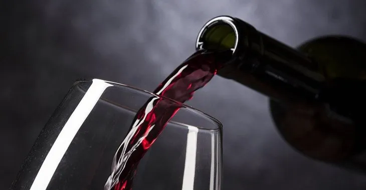
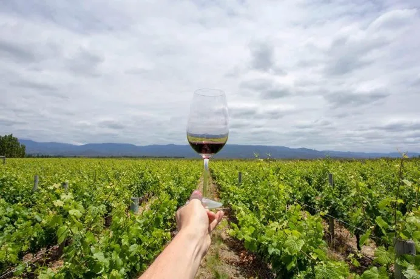
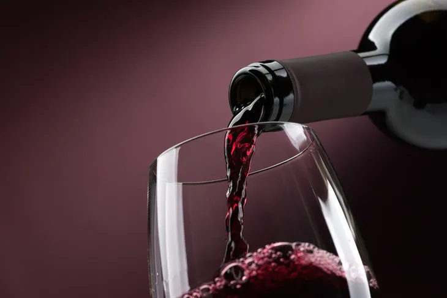
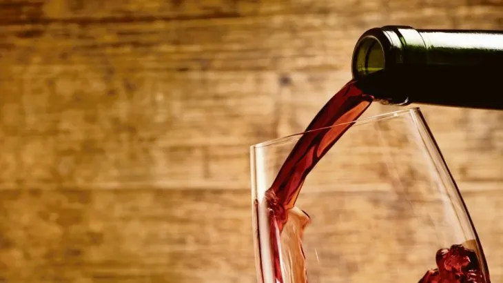

AMOR POR EL VINO
Existen mas de 3000 variedades o cepajes de uva para vino en el mundo. Cada una de ellas emplazadas en una diversidad de territorios, suelos, alturas, climas y gente. Esto ofrece una diversidad de expresión de cada tipicidad que se puede considerar única en el mundo.
Malbec
Vino tinto corpulento con taninos suaves y aromas frutales. Por más que sea de origen francés, la uva Malbec se adaptó muy bien al suelo argentino. Tanto será así que se convirtió en un referente de la enología argentina e incluso muchos lo catalogan como el vino nacional.
Con niveles de producción únicos en el mundo, las vitivinícolas se expanden a lo largo de todo el país, pero el 86% se concentra en Mendoza. Va muy bien acompañarlo con asado o una picadita con queso roquefort.
Bonarda
Vino tinto con bajo contenido de taninos. La Bonarda es la segunda cepa más plantada en el país y algunos incluso la consideran el "nuevo" Malbec, debido a su enorme potencial. La diferencia entre la que se encuentra en Italia con la versión nacional es que tiene características similares a la rarísima uva Douce Noir, de la región de Savoie, Francia.
Su producción también se concentra en Mendoza (además de San Juan). Con un color intenso y oscuro, recomendamos combinarlas con unas ricas empanadas.
Torrontés
Vino blanco fresco, frutal, con bajo contenido de taninos. Mientras que el Malbec es el tinto argentino por excelencia, el Torrontés es su versión en vino blanco. A diferencia de todos los demás, esta uva es nativa del país y se cultiva principalmente en el noroeste argentino. Incluso existen tres tipos de Torrontés: el mendocino, el sanjuanino y el riojano. Cada uno tiene sus propias características, pero el riojano es el que más se ha consolidado en el mercado, con varios premios internacionales en su haber. Desde acá bancamos mezclarlo con comidas saladas.
Cabernet Sauvignon
Vino tinto elegante y sutil, con taninos robustos y aromáticos. Considerada la reina de las cepas (buena parte de los grandes vinos argentinos se elaboran con ella), el Cabernet Sauvignon cobró relevancia internacional por su fácil adaptabilidad. En Argentina, se produce en las provincias del oeste y, dependiendo de su región, los aromas difieren. Más que nunca aplica la frase cuanto más viejo, mejor.
Merlot
Vino tinto suave y con complejidad aromática. Su producción continúa siendo baja pero su calidad es muy alta. En la Argentina, los mejores vinos provienen del Valle de Uco, en Mendoza, y de la Patagonia, debido a sus ubicaciones elevadas y de clima fresco. El maridaje ideal es con una carne asada con chimichurri.
Pinot Noir
Vino tinto fresco, ácido, de aroma terroso. El Pinot Noir es una cepa que requiere especial cuidado y un clima particularmente frío para alcanzar todo su potencial. Como el Merlot, también se produce en el Valle de Uco, Mendoza, y en la Patagonia. De color rojizo apagado, recomendamos acompañar con un sabroso plato de pollo.
